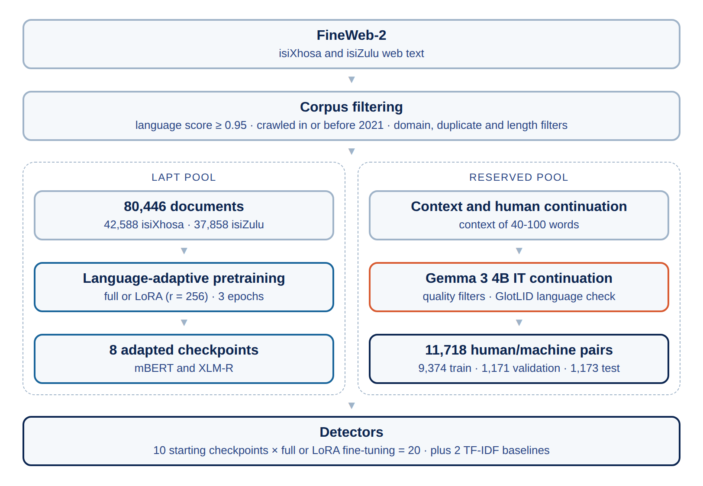
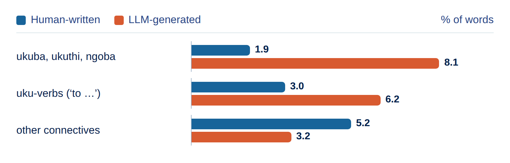
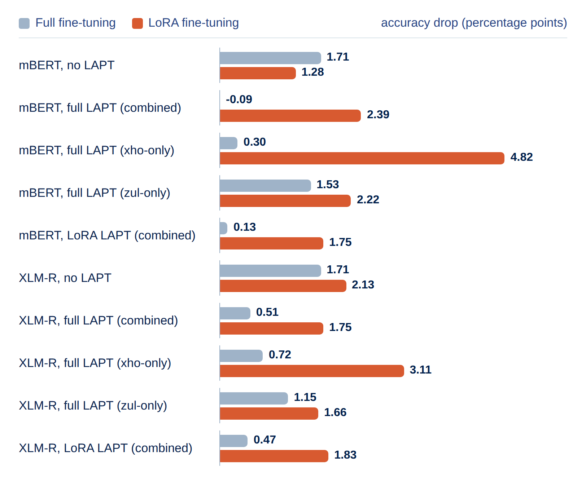

Problem
The rapid growth of large language models (LLMs) has resulted in machine-generated text (MGT) being harder to distinguish from human-written text. This has raised concerns about misinformation, academic integrity and content authenticity.
While much research has been done on MGT detection, this is largely confined to high-resource languages such as English. There is relatively little research done on low-resource languages such as South African languages. This research investigates MGT detection for two South African languages: isiXhosa and isiZulu.
For isiXhosa and isiZulu specifically, this problem is compounded by the morphological structures of these languages. Both languages are agglutinative languages that are written conjunctively with rich noun-classes. Since the subword tokenisers used by multilingual models are trained mostly on high-resource languages such as English, they may fragment these morphologically dense words poorly, which may reduce the quality of machine-generated text and impair detectors’ abilities to identify it.
Research Question
How well do language-adaptively pretrained and LoRA fine-tuned XLM-RoBERTa (XLM-R) and mBERT models compare to a basic logistic regression model when detecting machine-generated text across isiXhosa and isiZulu, measured by macro-F1 alongside accuracy, precision, recall, and AUC-ROC?
Method
We create a dataset of 11,718 human/machine text pairs using FineWeb-2 for the human text and Gemma 3 4B for the continuations. This is used to evaluate mBERT and XLM-R with and without language-adaptive pretraining vs a TF-IDF baseline. We found the word signals that indicate LLM-generated text by looking at the TF-IDF word weights and built a classifier on three word groups and how often they appear.
- Dataset
- 11,718 human/machine pairs in isiXhosa and isiZulu
- Data split
- 9,374 training · 1,171 validation · 1,173 test
- Machine text
- Gemma 3 4B IT continuations
- Detectors
- mBERT and XLM-R with full or low-rank adaptation (LoRA) fine-tuning
- Adaptation
- No language-adaptive pretraining (LAPT), full LAPT (combined, xho-only, zul-only) or LoRA LAPT (combined)
- Baselines
- Word- and char-level TF-IDF with logistic regression
Corpus filtering pipeline
We chose a cut-off score of 0.95 (only accepted text with a
language_score >= 0.95) to make sure that the
texts used were the correct language. Once the corpus was
filtered, it was then split into two disjoint pools: a LAPT
pool of unlabelled text and a reserved pool which was used
for text generation. When constructing the splits, we
grouped the documents by seed id to ensure that human and
machine-generated pairs always stayed in the same split.

LAPT pipeline design
To allow the model to take in all the tokens available, we needed to split the text into chunks which could be fed to the models without any text being truncated. When the data was chunked, it was packed into 512-token blocks using the FULL-SENTENCES approach. A separator token was inserted at the document boundary. When we chunked the data, we grouped them by language to ensure that isiXhosa and isiZulu text did not get mixed mid-sequence.
For pretraining, we had two training modes. One mode was full-parameter LAPT and the other was LoRA LAPT using a rank of 256. We also pretrained on one language instead of both to evaluate the cross-lingual performance of the models. We used fixed hyperparameters using Gururangan et al.’s values rather than searching for the best parameter and used 3 epochs mainly due to a tight compute budget.
TF-IDF baselines
We created two variants of the baseline, where we use word-level TF-IDF and char-level TF-IDF. We added char-level TF-IDF due to the agglutinative nature of the languages.
Classifier fine-tuning design
We tested 10 configurations of fine-tuning for both mBERT and XLM-R. This consisted of a full-fine-tuning run for each pretrained model and a LoRA fine-tuning run for each model. We then also tested full-fine-tuning and LoRA fine-tuning for both models without using LAPT.
To get the hyperparameters, we used BOHB-style search using Optuna’s TPESampler. When a LoRA trial was run, rank was also searched rather than fixed. Each model ran 8 trials before completing.
Evaluation metrics
Each classifier run reports the accuracy, precision, recall, F1 score and confusion matrix. This was done for the TF-IDF baseline and both mBERT and XLM-R classifiers.
McNemar’s tests compare two classifiers evaluated on the same test set looking at examples where they disagree. The tests ran at two thresholds with 50 comparisons for each. Since we conducted 100 comparisons, we applied Bonferroni correction. This produced a corrected threshold of α = 0.0005.
Results
Model accuracy
Our first finding was that across all 22 models tested, we had accuracy figures of 0.9970-0.9996.
We also found that a TF-IDF baseline did as well as the transformer detectors, showing that the words used in the text were enough of an indicator.
| Model | Accuracy | Macro-F1 | AUC-ROC |
|---|---|---|---|
| TF-IDF (word) | 0.9974 | 0.9974 | 0.9999 |
| TF-IDF (char) | 0.9974 | 0.9974 | 0.99997 |
| mBERT (10 configurations) | 0.9970 - 0.9991 | 0.9970 - 0.9991 | 0.99957 - 0.99999 |
| XLM-R (10 configurations) | 0.9970 - 0.9996 | 0.9970 - 0.9996 | 0.99953 - 0.99999 |
Statistical significance
We found that none of the adapted vs unadapted comparisons showed statistically significant results at the default threshold.
Many non-significant comparisons in our results had very few discordant pairs due to the near-ceiling accuracy observed and should be treated as inconclusive due to limited statistical power rather than a confirmation of equivalence.
| Comparisons (default threshold) | Tested | Significant (α = 0.0005) | Smallest p |
|---|---|---|---|
| Adapted vs unadapted | 16 | 0 | 0.22 |
| All comparisons | 50 | 0 | 0.031 |
Lexical indicator analysis
We found that conjunctions used in the text were a good signal for detecting human or machine text.
We found that some conjunctions were human-leaning such as xa (when), uma (if), nangona (although) and ukuze (in order to). The three highest machine-leaning conjunctions that we found were ukuba (if/to be), ukuthi (that) and ngoba (because). Other machine indicators were infinitive verb forms and generic vocabulary such as abantu (people) and esihle (beautiful).

This was also supported by a classifier built on three word rates alone achieving an accuracy of 88.92%.
Robustness and confound checks
While LoRA trains fewer parameters and uses less VRAM, it is less robust than full fine-tuning.
We found that when we stripped the punctuation, LoRA was affected more greatly than full fine-tuning in 9 out of 10 pairs with the only exception being mBERT with no-LAPT.

| Check | Diagnostic accuracy (raw → controlled) | Transformer accuracy change (default threshold) |
|---|---|---|
| Length | 65.71% → 51.98% | -0.15 to +0.02 pp |
| Punctuation | 76.85% → 50.09% | -4.82 to +0.09 pp |
| Repetition | - | -0.02 to +0.03 pp |
| Word groups | 88.92% | -0.51 to +0.13 pp |
Discussion & Conclusion
TF-IDF models were able to achieve an accuracy of 99.74%. This suggests the task may not require deep linguistic understanding. The detection may be catching shallow artifacts of Gemma 3 4B IT’s generation rather than testing genuinely sophisticated content-based distinction.
This does not mean that detection for isiXhosa and isiZulu is easy but rather that the generator, which is small compared to many frontier models, was not able to produce text without clear detectable signals.
Takeaway: Near-perfect detectors; adaptation showed no measurable gain; word choice was a strong indicator.
Limitations and Future Work
- The limitations faced in this work were that we only used one model for generation.
- We also did not test multiple different prompting strategies and prompts, with our prompt causing the model to generate text that contained generic vocabulary and lacked sentence complexity.
- We also excluded cross-domain evaluation making the detector less useful in real scenarios.
- We also only used isiXhosa and isiZulu not the broader Nguni languages or other South African language families.
Future work: Extensions of this project would be to test with multiple generators including larger models. We would extend the classifiers to other Nguni languages or Sotho-Tswana languages, and we would also compute cross-domain evaluation and revisit the prompt used for generation.